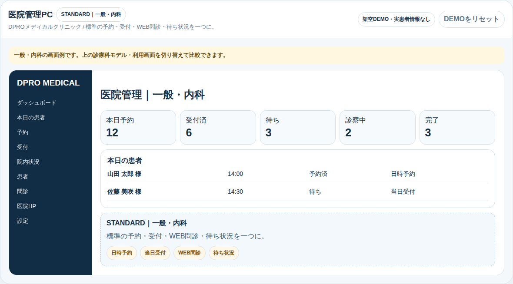

DPRO LINE SYSTEMS / DPRO MEDICAL / A4 FLYER MASTER V2.0
予約だけで、
終わらせない。
予約・WEB問診・来院受付・院内進行・待ち状況・次回フォローまで。患者スマホと医院側の5画面を同じ情報基盤につなぎます。
6診療科モデル / 5画面 / 公開LIVE DEMO

01 予約患者スマホから予約導線を整理
02 WEB問診来院前入力を医院運用につなぐ
03 来院受付受付iPad・医院側で来院を確認
04 院内進行受付済・待ち・診察などの状態を共有
05 待ち状況患者側でも現在状況を確認
06 次回フォロー診療後の次回導線まで一連で確認
WEB / LINE / 患者スマホ→DPRO MEDICAL→医院管理PC / iPad / Staff / HP
公開DEMOは架空データを使用し、本番書込みは行いません。
CUSTOM FIT
共通基盤を保ちながら、6診療科モデルで運用差分を確認。
LIVE SYNC
患者側・受付・スタッフ・医院HPが同じ流れを確認できる設計。
MONTHLY COST CHECK
料金・導入条件は最新のDPRO SHOP／導入相談で確認。
LIVE DEMOhttps://dpromstk2000-lab.github.io/dpro-medical-standard/medical-public-demo.html
PRODUCT SITEhttps://dpromstk2000-lab.github.io/dpro-line-systems-site/systems/medical.html
DPRO SHOP / 導入相談https://dpro-shop.com/systems/medical
DPRO MEDICAL / PRESENTATION STANDARD 2026-09医療行為・診療判断を代替するものではありません。